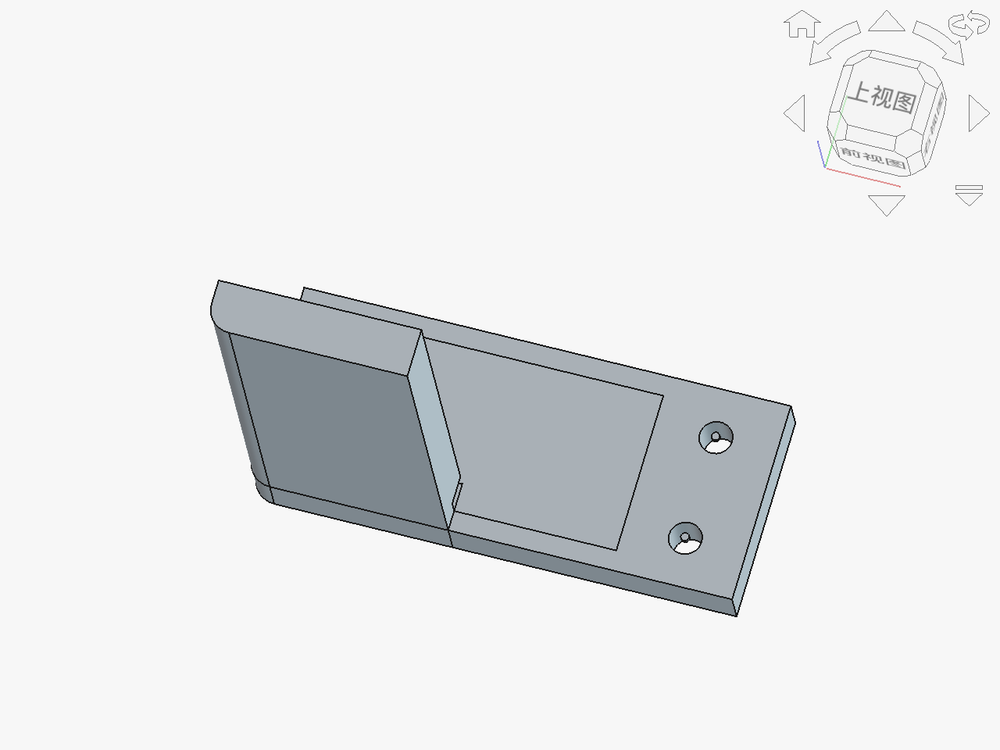

FreeCAD配套模型索引
通用技术教案AI赋能 · 4个三维模型 · 支持FreeCAD/STEP格式

物化能力
图样表达
台灯模型 (DeskLamp)
对应教案：必修一 第六章第4节《制作台灯模型或原型》
学生制作台灯原型的三维参考模型，包含底座、灯杆、灯罩、灯泡和开关旋钮五个部件。可用于课前展示结构分解、课中指导装配顺序、课后评价学生作品。
- 底座（圆柱体 r=60mm, h=15mm）
- 灯杆（圆柱体 r=8mm, h=180mm）
- 灯罩（截锥体 r1=45mm → r2=15mm, h=55mm）
- 灯泡（球体 r=12mm）
- 开关旋钮（圆柱体 r=6mm, h=8mm）
DeskLamp.FCStd
DeskLamp.step
渲染图 PNG

结构设计
工程思维
桁架桥模型 (TrussBridge)
对应教案：必修二 第一单元第3节《结构的设计》
Warren型桁架桥结构模型，含52个部件：上下弦杆、斜杆、端柱、横梁和桥面板。学生可观察桁架受力传递路径，分析各杆件受拉/受压状态，为纸桥承重比赛提供结构参考。
- 跨度 300mm，高度 60mm，宽度 80mm
- 6跨Warren桁架（双侧对称）
- 上下弦杆 + 斜撑 + 端柱
- 7根横梁连接两片桁架
- 桥面板（矩形板 300×80×5mm）
TrussBridge.FCStd
TrussBridge.step
渲染图 PNG

计算机辅助设计
图样表达
L支架零件 (LBracket)
对应教案：必修一 第五章第3节《计算机辅助设计》
典型CAD练习零件，展示从2D草图到3D实体的建模流程：拉伸→打孔→开槽→圆角。学生可在FreeCAD中打开.FCStd文件查看建模历史树，理解参数化设计思想。
- 外形 120×50×120mm（L型截面）
- 8个安装孔（r=4mm，水平臂4个+垂直臂4个）
- 顶部凹槽特征（60×40×5mm）
- 内角圆角（r=6mm，应力释放）
- 孔位中心标记（辅助尺寸标注）
LBracket.FCStd
LBracket.step
渲染图 PNG

闭环控制
系统设计
智能温室大棚框架 (Greenhouse)
对应教案：必修二 第四单元第3节《闭环控制系统》
人字屋面温室大棚结构模型，含55个部件：5组横向屋架、纵向系杆、屋脊梁、门框、传感器支架和控制箱。学生可直观理解闭环控制系统的硬件组成（传感器→控制器→执行器）在温室中的物理布局。
- 尺寸 200×120×130mm（W×D×H）
- 5组人字屋面桁架（间距30mm）
- 纵向系杆（檐口+基础双层）
- 门框（50×70mm）
- 传感器支架（室内顶部）
- 控制箱（外墙侧面，模拟控制器安装位）
Greenhouse.FCStd
Greenhouse.step
渲染图 PNG